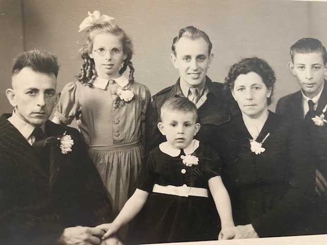

Ik ga het hier hebben over mijn stamboom aan de Nederlandse kant. Echter zal deze kant van mijn stamboom kleiner zijn dan de Italiaanse kant. Ik heb mijn biologische opa nooit gekend niet biologische opa , maar had wel altijd een andere man die ik opa kon noemen. Helaas hoort hij niet officieel bij mijn stamboom, waardoor ik er weinig over ga zeggen. Dit betekent dat ik alleen mijn oma vragen kon stelen, zij is de enige die nu nog leeft.
Nederlandse stamboom kant
Mijn Nederlandse familie gaat terug tot ongeveer 1950. Iedereen was toen boer of huisvrouw, wat best normaal was voor de tijd waarin ze leefden. Echter had de vader van mijn opa technische opleiding gedaan. Wat mijn overgroot ook heeft gedaan. Mijn vader is meer de economische kant opgegaan. Hij heeft nu zijn eigen berijf en werkt op de universiteit Nyenrode. Dit betekent dat er best een groot verschil zit tussen hun intresse.
De vrouwen in mijn familie waren allemaal huisvrouwen, tot mijn oma. Mijn oma was altijd al een ondeugend meisje geweest. Door de thuis situatie van mijn oma, heeft ze haar school nooit afgemaakt. Haar vader was een bakker en haar moedere hielp in de bakkerij. Echter begon ze toen met kranten bezorgen en andere bijbaantjes. Toen de oorlog uitbrak, besloot mijn oma om in het keger te werken. Ze werkte bij de vrouwelijke luchtmacht. Dit vond ze leuk om te doen, maar na de oorlog is ze gestopt om bij de luchtmacht te werken. Daarna besloot ze om te werken bij de export, wat haar ook goed beviel. Dit was haar laatste baantje die ze heeft gehad. Toch vindt ze dat ze goede keuzes had gemaakt met haar banen. Nu zit ze in pensioen, waar ze ook heel erg aan toe was.
Wat altijd heel kenmerkend was in mijn Nederlandse stamboom, was dat ze allemaal lang waren. Mijn oma en haar ouders komen allemaal uit Friesland. Wat je ook kan zien in de foto hieronder, dat ze allemaal grote oren hadden. Echter iets wat je niet kan zien in de foto, is dat de meeste ook blauwe ogen hadden. Dit zijn een paar kenmerkende dingen in mijn Nederlanse stamboom.
 Hiernaast kun je de foto zien van mijn oma en haar ouders. Daarnaast staan ook haar 3 broers in de foto. De oudste broer leek veel op mijn oma, hij was ook heel ondeugend. De vader was een baker en de vrouw een huisvrouw, maar soms werkte ze in de bakkerij. Mijn oma's broers hadden hun school niet afgemaakt en zijn ook het leger in gegaan. Gelukkig zijn ze er allemaal levend uitgekomen. Wat niet zo leuk was, dat mijn oma's oudste broer vorig jaar is overleden. Gelukkig leeft mijn oma nu nog, helaas wel alleen. Mijn vader belt vaak met mijn oma, zodat ze niet te veel alleen is.